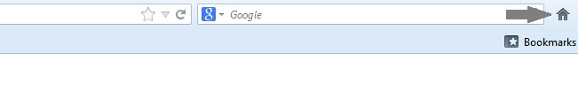
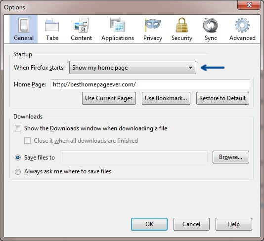

Follow these 2 easy steps in Firefox:
1. Setting your homepage:

2. Setting your homepage to open with browser (Recommended):
At the top of the Firefox window, click on the Firefox button and select Options. Select the General panel and select "Show my home page" when Firefox Starts.

Click here to return to BestHomepageEver.